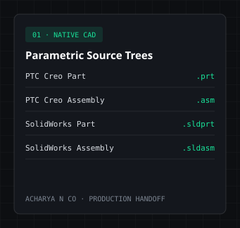

01 · DISCIPLINE
Mechanical Part Design
Individual mechanical components engineered to exacting functional parameters, stress limits, and 5-axis CNC, casting, or forging load paths.
Precision CAD for manufacturers, startups, and hardware teams, where every tolerance matters.
Individual mechanical components engineered to exacting functional parameters, stress limits, and 5-axis CNC, casting, or forging load paths.
Feature-based parametric solids and curvature-continuous surfacing with editable .prt / .sldprt feature trees and STEP AP242 exports.
Formed enclosures, chassis, and bent brackets with DIN 6935 K-factor compensation, corner reliefs, PEM layouts, and 1:1 laser DXFs.
Ergonomic form synthesis with internal PCB and battery packaging, split housings, snap-fit interlocks, and brass-insert screw bosses.
Constraint-driven multi-body kinematic assemblies with static and dynamic interference checks, stack-up studies, and structured BOMs.
Overhang-free 45° chamfers, print-in-place kinematic hinges, slicer-kerf thread compensation, and high-density STL/3MF files for FDM, SLA, SLS, and DMLS.
Generative mass reduction, rib pattern stiffening, stress-relief filleting, and uniform wall thickness to maximize stiffness-to-weight ratios.
±0.005 mm
Precision tolerance grade on critical mating interfaces and guide rails.
ISO 2768-mK/fH
Enforced general linear, angular, and geometrical tolerances across prints.
K-factor 0.44
Nominal bend allowance calibrated to DIN 6935 calculation tables.
ASME Y14.5
Full datum reference frames alongside ISO 1101 control specifications.
CAD WORKPROOF ARCHIVE · CREO, SOLIDWORKS & CATIA VIEWPORTS
Click any viewport capture to inspect full-resolution CAD geometry
Core engineering thesis — Acharya N Co, Hyderabad
Strict form, orientation, location, profile, and runout controls enforced down to ±0.005 mm on critical mating interfaces.
Toolpath clearances, K-factor 0.44 bend tables, PEM layouts, split-housing screw bosses, and structured BOMs ready for fabrication.
45° self-supporting transitional chamfers, print-in-place articulated hinges, and slicer-kerf thread compensation without support scarring.
Static and dynamic interference checks, thermal expansion allowances, and 0.05 mm hand clearances verified before releasing assemblies.

100% parametric CAD source files (Creo .prt / .asm and SolidWorks .sldprt / .sldasm)

Neutral exchange formats STEP AP242, Parasolid (.x_t), IGES, plus high-density STL and 3MF

2D manufacturing drawings in PDF and DXF with full ASME Y14.5 GD&T annotations plus structured BOM
Asynchronous technical intake directly with Engineering Lead K. Acharya (Hyderabad, India). Accepted inputs:
You can submit hand sketches with critical dimensions, existing 2D drawings (PDF, DWG, DXF), rough prototype scans or point clouds, STEP or IGES files for conversion, optimization, or lightweighting, or problem statements specifying boundary conditions such as load, volume, temperature, and manufacturing method.
Packages include 100% parametric CAD source files (Creo .prt / .asm and SolidWorks .sldprt / .sldasm), neutral exchange formats (STEP AP242, Parasolid .x_t, IGES), additive meshes (high-density binary STL, 3MF), 2D manufacturing drawings (PDF/DXF with ASME Y14.5 GD&T), and structured Bills of Materials (BOM).
Acharya N Co models in PTC Creo Parametric 12 (Advanced Design Specialist level), Dassault Systèmes SolidWorks 2025 (Certified SolidWorks Professional — CSWP), CATIA for Class-A surface lofting and aerospace components, and AutoCAD for 2D orthographic drafting and DXF laser profiles.
Drawings enforce ASME Y14.5 / ISO 1101 GD&T controls (form, orientation, location, profile, and runout), ISO 2768-mK / ISO 2768-fH general tolerances down to ±0.005 mm on critical mating interfaces, and ISO 5456-2 First & Third Angle projections.
Sheet metal deliverables include folded assembly models, 1:1 flattened DXF patterns for CNC fiber laser cutting, bend deduction calculations, DIN 6935 K-factor compensation tables (0.44 nominal), corner tear-relief notches, and PEM self-clinching fastener layouts.
Parts are engineered specifically for FDM, SLA, SLS, and metal DMLS processes using overhang-free 45° self-supporting chamfers, print-in-place articulated kinematic hinges, thread compensation for slicer kerf, anisotropic layer tensile compensation, and high-density STL / 3MF output.
Send your engineering brief, reference sketches, or existing CAD files via WhatsApp (+91 9160512832) or direct email (kacharya1903@gmail.com) for asynchronous technical review with founder K. Acharya.
The studio serves manufacturing and machine tooling companies, hardware and product development startups, defense, tactical and aerospace component developers, hydraulic, fluid and power transmission teams, and additive manufacturing developers.